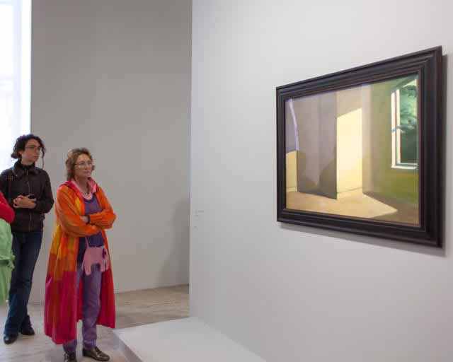
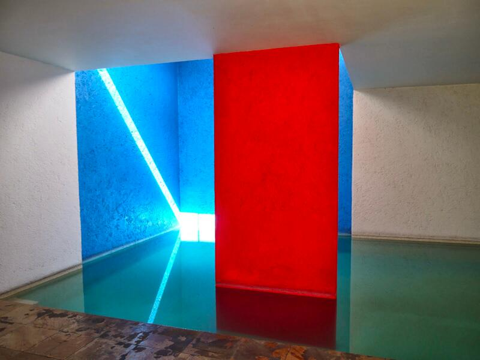
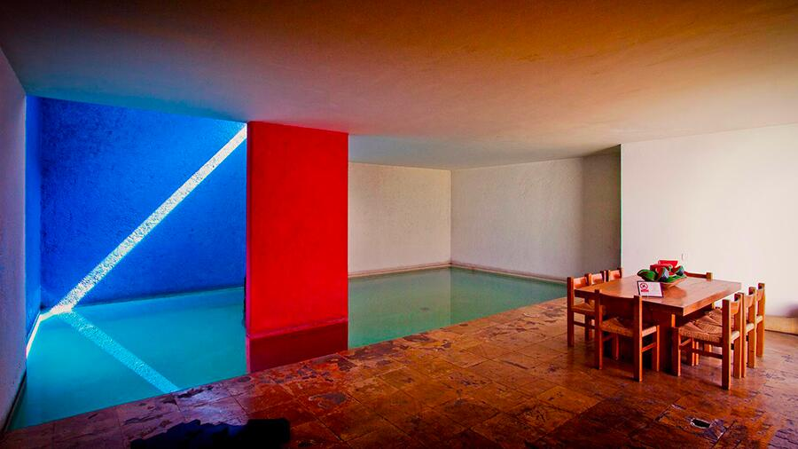
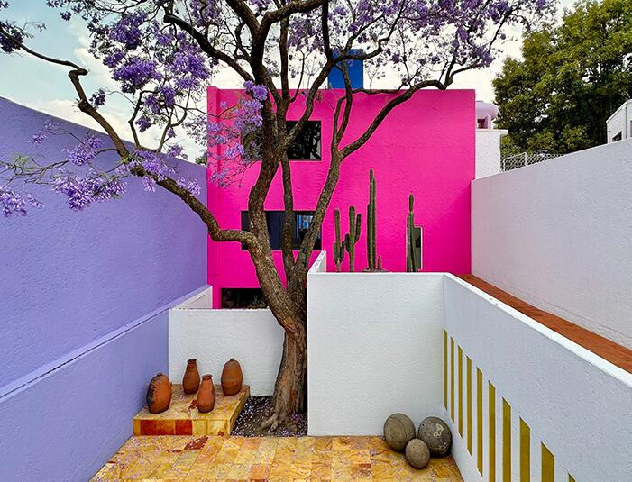
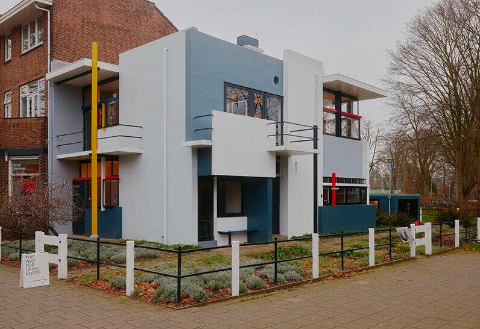
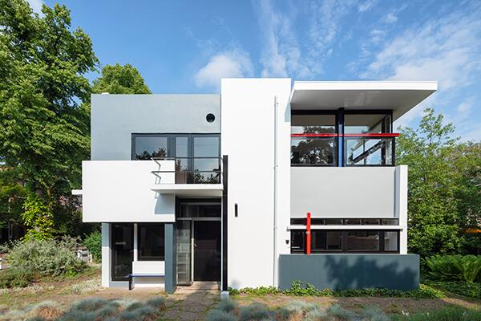

Le figure della profondità:
piani, superfici, sequenze, intervalli

La profondità non è distanza fisica, ma costruzione mentale fatta di rapporti tra piani, intervalli, soglie, compressioni. È una logica stratificata che organizza lo spazio e guida la percezione. Le immagini selezionate rivelano la potenza strutturante della profondità, come principio fondante dell’organizzazione architettonica.

- un piano interno,
- una soglia abbagliante,
- un piano esterno marino,
- nessuna figura, solo percezione pura.
Il dipinto di Edward Hopper Rooms by the Sea (1951) è ospitato nella collezione permanente della Yale University Art Gallery a New Haven, nel Connecticut. Hopper ha completato il dipinto a olio su tela nel suo studio a South Truro, nel Massachusetts, e la composizione ricorda la vista dalla porta sul retro del suo studio. L’immagine austera raffigura una stanza vuota con una porta aperta che conduce direttamente al mare. La luce solare che entra nella stanza crea un senso di solitudine e introspezione, un tema ricorrente nell’opera di Hopper.




- campiture cromatiche,
- luce laterale,
- piani opachi e luminosi,
- pause e soglie.
Il corridoio e la zona piscina di Casa Gilardi offrono esperienze spaziali nettamente contrastanti, che illustrano la maestria di Luis Barragán nel manipolare la luce, il colore e l’atmosfera per suscitare emozioni diverse.
Il corridoio funge da elemento di transizione, una progressione attentamente orchestrata verso lo spazio culminante della piscina. È caratterizzato da una luce calda e dorata ottenuta grazie a una fila di piccole finestre verticali con vetri dipinti di giallo lungo un lato. Lo spazio è intenzionalmente stretto e lungo, creando un senso di anticipazione e movimento. La luce gialla inonda le pareti bianche, creando un’atmosfera quasi eterea, simile al bagliore di un tramonto, che guida l’occhio e il corpo verso la destinazione finale. Oltre a collegare la parte anteriore della casa con la zona posteriore, il corridoio incornicia il patio adiacente con l’albero di jacaranda, sebbene l’accesso diretto avvenga solo dalla sala da pranzo.
La zona piscina è l’apice del design, un’area pensata per la socializzazione, la riflessione e la fusione tra architettura e acqua. A differenza del giallo caldo e unidirezionale del corridoio, la piscina è dominata da un’interazione dinamica di colori vivaci (blu cobalto, rosso e, in origine, un muro rosa) e luce naturale zenitale proveniente da lucernari nascosti. La luce cambia durante il giorno, proiettando forme e riflessi simmetrici sull’acqua e sulle pareti, creando un ambiente in continua evoluzione. Lo spazio è più ampio, concepito come un’oasi di tranquillità e contemplazione. L’acqua riflettente e le pareti colorate creano un’atmosfera surreale e quasi spirituale, isolata dal trambusto urbano. La piscina è integrata con la sala da pranzo, sfumando i confini tra le attività quotidiane e un’esperienza sensoriale unica. Un muro rosso funge da elemento strutturale e compositivo nell’acqua, accentuando ulteriormente il gioco di colori.
Mentre il corridoio è un’esperienza sensoriale lineare e calda che guida il movimento, la zona piscina è uno spazio statico, un’esperienza immersiva e dinamica dove luce, acqua e colori vibranti convergono in un’armonia che favorisce la serenità e la socializzazione.



- piani sospesi,
- elementi che si intersecano,
- profondità non come “prospettiva”, ma come articolazione.
- colore,
- stacco,
- posizione relativa.
La facciata della Casa Rietveld Schröder del 1924 è una composizione asimmetrica e dinamica di piani e linee orizzontali e verticali scollegati, che riflette i principi del movimento artistico De Stijl. I componenti sembrano scivolare l’uno accanto all’altro, creando un effetto collage che frammenta il volume dell’edificio e sfida le idee tradizionali di massa solida.
Composizione ed effetti visivi
- Il volume esterno della casa è suddiviso in parti costitutive, con pareti, lastre, pilastri e travi trattati come singoli elementi lineari e piatti. Questo approccio conferisce un nuovo significato spaziale ai componenti strutturali.
- Gli elementi sporgenti e arretrati creano una composizione dinamica e tridimensionale che sfuma i confini tra spazio interno ed esterno. Anche le grandi finestre con telai sottili sottolineano l’apertura.
- Il colore è usato deliberatamente per definire e separare i diversi piani e linee. Le superfici sono dipinte in bianco e varie tonalità di grigio. Gli elementi lineari (ad esempio, i bordi dei balconi, le sporgenze del tetto, i pali di sostegno sottili) sono accentuati con colori primari come il rosso, il blu e il giallo. I telai delle finestre e delle porte sono dipinti di nero per enfatizzare ulteriormente le linee grafiche.
- Illusioni ottiche: tonalità più chiare di grigio e bianco sono state collocate in primo piano rispetto alle superfici più scure per sottolinearne la separazione, poiché l’osservatore percepisce i colori più chiari come più vicini.
- Spazio flessibile: il progetto è frutto della collaborazione tra l’architetto Gerrit Rietveld e il cliente Truus Schröder, che desiderava una casa senza pareti convenzionali e statiche. Il piano superiore, in particolare, è dotato di un sistema di pannelli scorrevoli e girevoli che consentono di trasformare lo spazio da un’unica zona aperta durante il giorno a diverse stanze più piccole durante la notte.
- Integrazione di arte e architettura: la facciata è considerata una rappresentazione tridimensionale di un dipinto di Piet Mondrian De Stijl, con ogni superficie che contribuisce a una composizione precisa di forma, spazio e colore.
- Continuità: la composizione si estende dall’esterno all’interno, con linee, piani e colori che scorrono continuamente attraverso lo spazio. Le finestre sono incernierate in modo da aprirsi solo a 90 gradi rispetto alla parete, mantenendo la rigorosa disciplina geometrica.